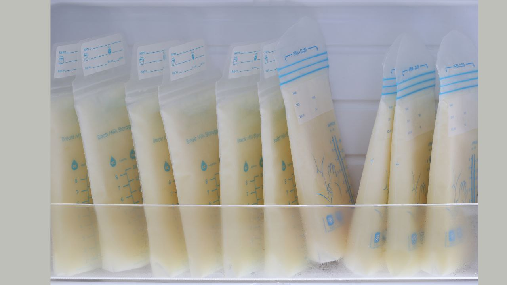
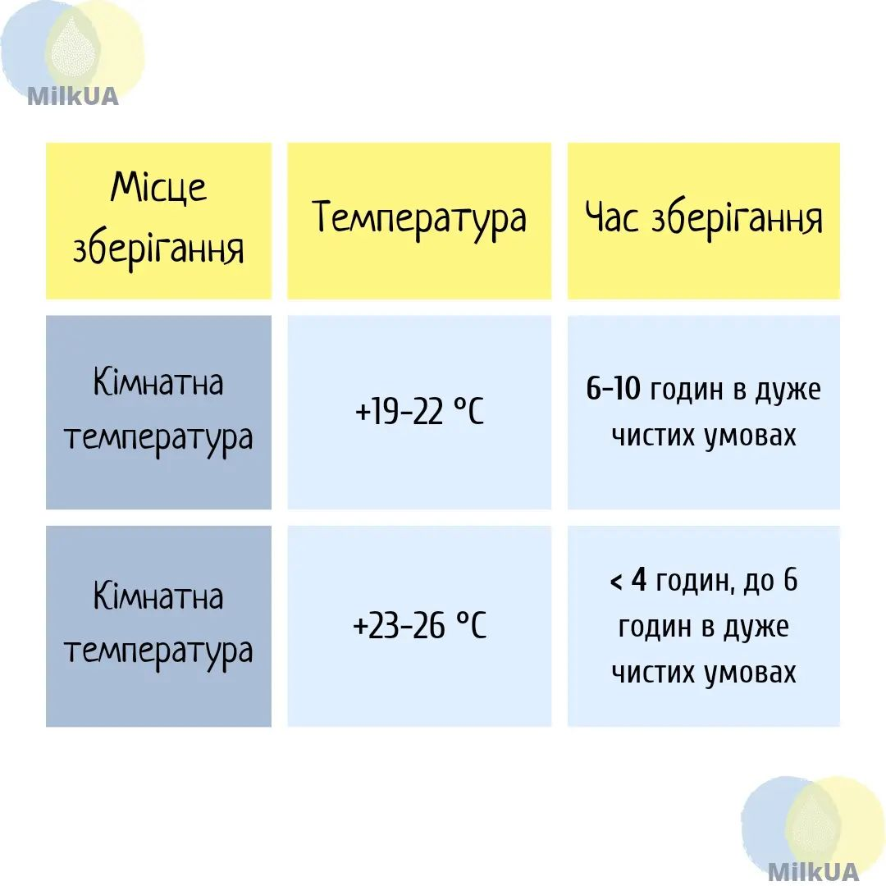
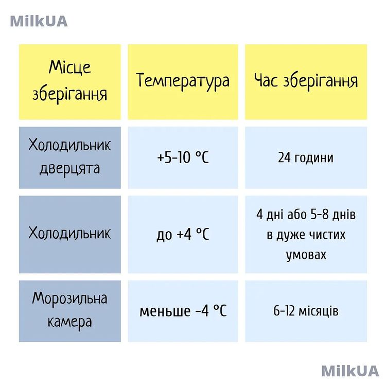
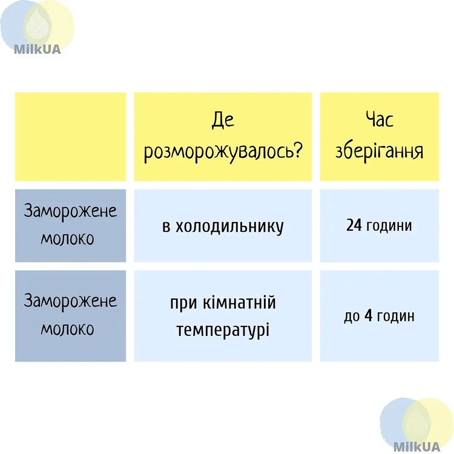

Зберігання грудного молока

👍 Вирішили створити власний банк молока? Тоді інформація про терміни його зберігання стане вам у нагоді!
У цьому дописі зазначаємо терміни придатності молока, призначеного для годування здорових малюків, що народилися в термін. Рекомендації щодо зберігання молока для передчасно народжених дітей надають медпрацівники.

🔸Свіже грудне молоко може зберігатися при кімнатній температурі (+19-22 °С) до 10 годин. Молозиво/молоко, зціджене протягом 6 днів після пологів, може зберігатися 12 годин при кімнатній температурі.
🔸Свіже грудне молоко може зберігатися при температурі трохи нижче кімнатної до 24 годин (наприклад, у портативному холодильнику з акумулятором холоду).
🔻Якщо молоко зберігатиметься при кімнатній температурі або в портативному холодильнику до його переміщення в холодильник, безпечний час зберігання може зменшитися.
🔺Щоб продовжити термін зберігання, необхідно якомога швидше помістити молоко в холодне місце.

🔸Свіже грудне молоко може зберігатися у холодильнику до 8 днів.
Краще зберігати молоко у задній частині холодильника, а не у відсіку дверей.
🔸Якщо в холодильника 1 дверцята и морозилка всередині, то ємність зі свіжим молоком можна зберігати в морозилці до 2 тижнів.
🔸Свіже грудне молоко може зберігатися в окремому відсіку морозильної камери холодильника до 3-6 місяців, залежно від того, як часто він буде відкриватися. Критичне значення має не те, як розташована морозильна камера, а яку температуру вона тримає. Зберігайте молоко у задній частині морозильної камери.
🔸Свіже грудне молоко може зберігатися в автономній морозилці протягом 6-12 місяців.

☝️Заморожене молоко може зберігатися в холодильнику до 24 годин після його розморожування.
☝️Розморожене молоко, що знаходиться при кімнатній температурі, є придатним до вживання не більше 4 годин.
Зауважимо, що верхня межа терміну зберігання означає «прийнятність» використання молока. Воно не буде зіпсованим, ним можна годувати малюка. Деякі вітаміни, антиоксиданти та інші речовини будуть втрачені, але навіть в цьому випадку ваше молоко буде набагато кращим для вашої дитини, ніж суміш.
Деякі організації охорони здоров'я, наприклад, Академія медицини грудного вигодовування, рекомендують менш тривалі "ідеальні" терміни зберігання, щоб молоко було використане до втрати будь-яких цінних реочовин.
Ми створили групу для мам-годувальниць, які готові поділитися своїм грудним молоком, або потребують його для догодовування або вигодовування свого малюка.
«Молочний затишок» не займається продажем молока, а підтримує його безоплатну передачу, в обмін на подяку.
Ми будемо вдячні, якщо ви поділитеся інформацією про наш чат підтримки зі знайомими мамами.